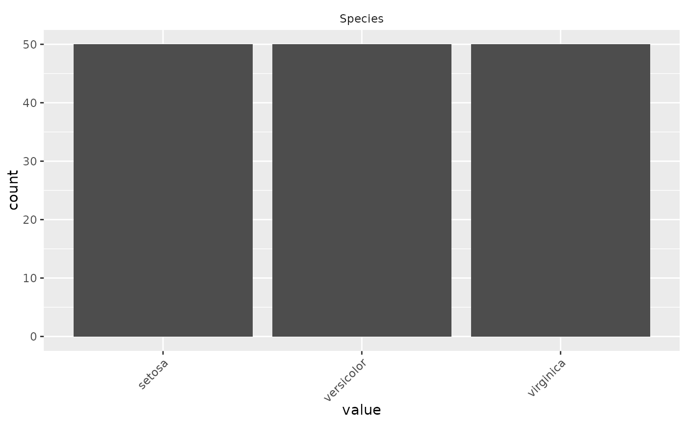
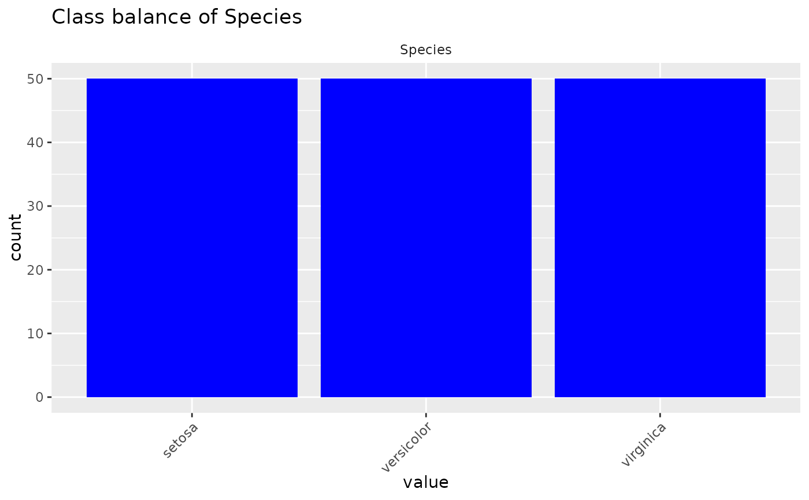

Quickly inspect the distribution of your categorical variables.
Arguments
- data
A non-empty data frame or tibble containing at least one categorical variable.
- vars
A character vector of categorical variable names contained in
data. Default valueNULLwill produce plots for every categorical variable in the dataset.- fill_colour
An R-supported colour or hex value used to fill the bars of the bar plot. Default value is "grey30".
- title
A non-empty string for the plot title. Default value
NULLresults in no title being displayed.- ...
Additional
ggplot2arguments passed togeom_barlayer for customizing the plot output.
Details
inspect_balance uses ggplot2 to produce bar plots visualizing the distribution of categorical variables. Any valid arguments that can be passed to a geom_bar layer in ggplot2 may also be passed to inspect_balance to modify plot outputs.
Examples
# Basic usage
inspect_balance(iris)

# Advanced usage
# Specify the variable to inspect and modify the plot appearance
inspect_balance(data = iris,
vars = c("Species"),
fill_colour = "blue",
title = "Class balance of Species")
